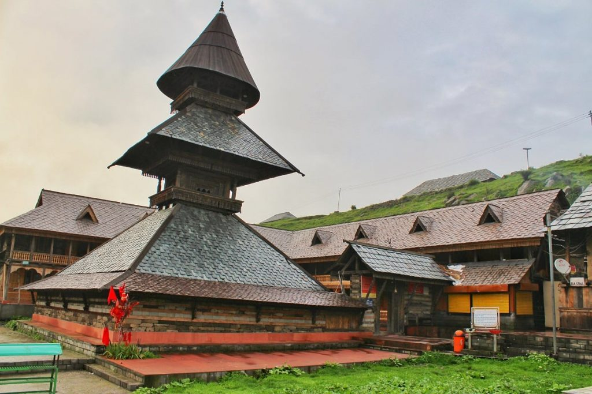
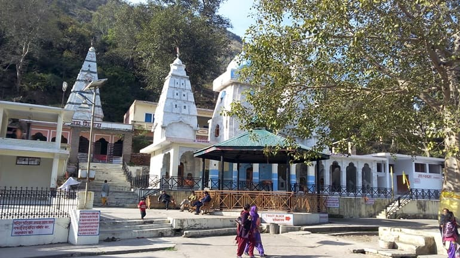
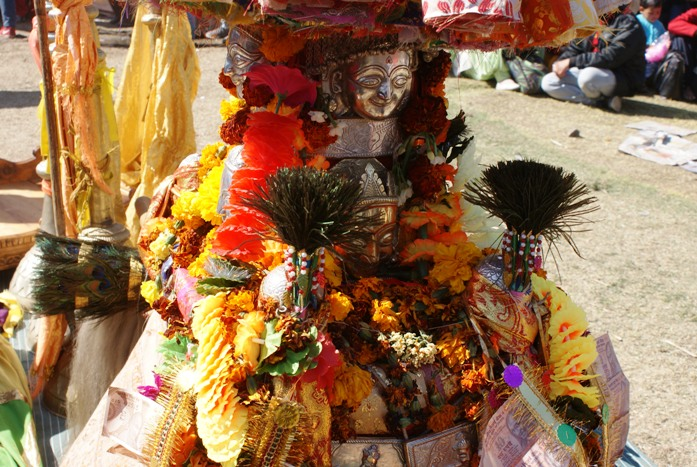
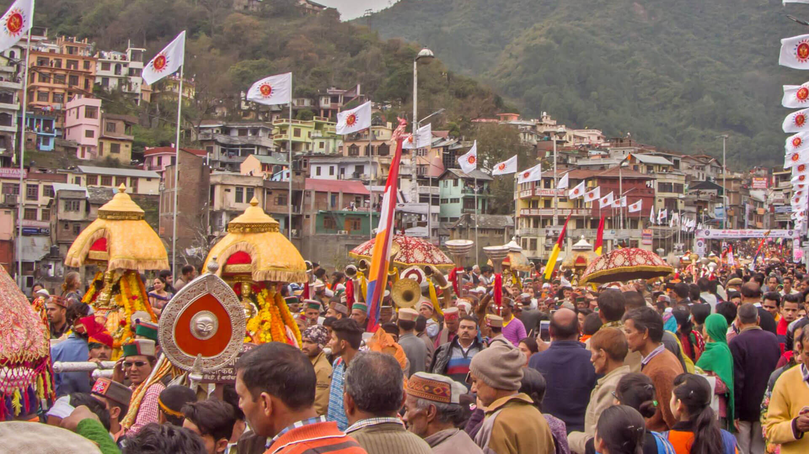

MANDI:

Famous Places Around Mandi :
1. Prashar fair:
is held near the lake of same name located at a distance of about 40 kms. from Mandi town in the month of June.
2. Markandya Rishi Fair:
Again in the month of May, a fair is held at Bali Chowki in the honour of Markandya Rishi Again in the month of May, a fair is held at Bali Chowki in the honour of Markandya Rishi
3.Hurang Narain Fair:
In the month of July/August, a fair is held in Hurang village in Chuhar valley in the honour of deity Hurang Narain. This fair is known as Narkhan fair and held for three days after every five years.
4.Shivratri:
Mandi Shivaratri Fair is an annual renowned international fair that is held for 7 days starting with the Hindu festival of Shivaratri, in the Mandi town of the Indian state of Himachal Pradesh.The festival’s popularity is widespread and hence is known as an international festival. In view of the large number of gods and goddesses that are invited to the festival from its 81 temples, Mandi town has the title of ‘Varanasi of the Hills’.
The people of the district celebrate various festivals almost round the year. As Hindus constitute the major population of the district, all Hindu festivals like Dussehra, Diwali, Holi, Baishakhi and Shivratri, etc. are celebrated with great pomp and show. Some of the important fairs and festivals being celebrated in the district are briefly hereunder:-
Prashar fair
Markandya Rishi Fair
Hurang Narain Fair
Shivratri
Famous Places Around Mandi :
1. Prashar fair:
is held near the lake of same name located at a distance of about 40 kms. from Mandi town in the month of June.

2. Markandya Rishi Fair:
Again in the month of May, a fair is held at Bali Chowki in the honour of Markandya Rishi Again in the month of May, a fair is held at Bali Chowki in the honour of Markandya Rishi

3.Hurang Narain Fair:
In the month of July/August, a fair is held in Hurang village in Chuhar valley in the honour of deity Hurang Narain. This fair is known as Narkhan fair and held for three days after every five years.

4.Shivratri:
Mandi Shivaratri Fair is an annual renowned international fair that is held for 7 days starting with the Hindu festival of Shivaratri, in the Mandi town of the Indian state of Himachal Pradesh.The festival’s popularity is widespread and hence is known as an international festival. In view of the large number of gods and goddesses that are invited to the festival from its 81 temples, Mandi town has the title of ‘Varanasi of the Hills’.
